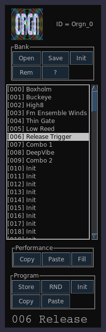

Program Bank
Previous( performance )
Next( keymode )
Home
Contents
Each active synth has an associated Program Bank.

The bank editor is divided in 4 vertical areas. The five buttons
near the top are dedicated to general bank functions.
- Open - open bank
- Save - save bank
- Init - initialize bank contents
- Rem - edit bank level remarks
The Performance area is related to the
current performance.
- Copy - Copy current performance to clipboard
- Paste - Paste clipboard to current performance
- Fill - Copy current performance over range of program slots
The Program area is related to the current program
- Store - store current program into bank
- Rnd - generate random program, not all synths will implement random
program generation.
- Init - Initialize current program
- Copy - copy current program to clipboard
- Paste - paste clipboard to current program
Previous( performance )
Next( keymode )
Home
Contents